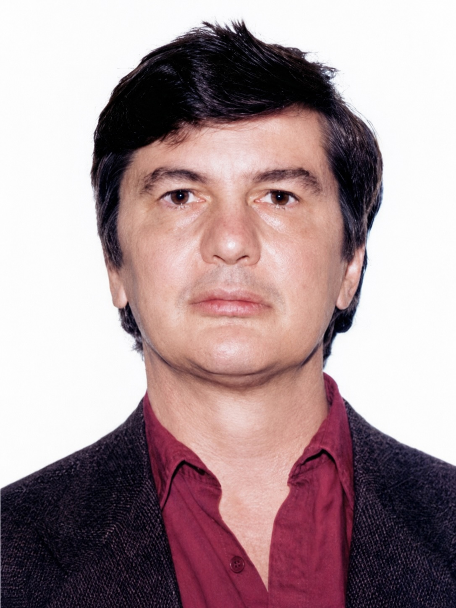

Abschiedsparty bei Ulli mit (von links nach rechts): Napo, Hilde, Derek, Jan und JoAnn.
1985 bis heute
„Napo, go give it up.“
Diesen Satz hörte Napoleone - wir nannten ihn Napo - mehr als einmal von Denis. In dessen Augen gab es nur einen Wachstumsfaktor für Gefäßzellen: bFGF. Alles andere war Zeitverschwendung. Und Napo verschwendete viel Zeit. Stundenlang saß er am Mikroskop und suchte nach einer Aktivität, von der Denis überzeugt war, dass es sie gar nicht gab.
Napoleone Ferrara kam aus Sizilien. Er war Arzt und hatte an der Universitätsklinik in Catania gearbeitet. Als er 1985 zu uns ins Labor kam, war er unser „Rookie“. Etwa 1,70 Meter groß, schmächtig, zurückhaltend und bescheiden. Während Denis bereits die Sequenz von bFGF bestimmt hatte, Gera den Rezeptor identifiziert hatte und ich Antikörper entwickelt hatte, mit denen sich bFGF erstmals spezifisch nachweisen ließ, stand Napo ohne eigenes Projekt da. Wir publizierten wie die Wahnsinnigen. Und Napo hatte nichts.
Ich erinnere mich noch gut daran, wie ich ihn zu Cho Hao Li mitnahm. Li war der Entdecker des β-Endorphins und damals einer der berühmtesten Hormonforscher der Welt. Sein Labor lag nur wenige Stockwerke unter unserem. Ich wollte ein Manuskript bei PNAS einreichen, dem Mitteilungsblatt der Nationalen Wissenschaftsakademie der USA. Dafür brauchte man damals die Unterstützung eines Akademiemitglieds. Li las die Arbeit, fand sie gut und reichte sie ein. Napo war beeindruckt. Nicht wegen des Manuskripts. Sondern weil er plötzlich einem Wissenschaftler gegenübersaß, den er bis dahin nur aus Publikationen gekannt hatte.
Napo hatte während seiner früheren Arbeiten gelernt, bestimmte Zellen aus der Hirnanhangdrüse zu kultivieren. Er suchte in den Kulturüberständen nach Stoffen, die das Wachstum von Gefäßzellen anregen. Er war überzeugt, Hinweise zu haben auf eine Aktivität, die nicht mit bFGF identisch war. Denis hielt das für Unsinn.
„Napo, go give it up.“
Doch Napo machte weiter. 1986 waren wir alle extrem produktiv. Napo arbeitete an unseren Projekten mit und war froh über jede Mitautorschaft bei einer unserer zahlreichen Veröffentlichungen. Aber gegen Ende des Jahres begann sich das Blatt zu wenden. Die Aktivität, nach der er gesucht hatte, war real. Sie stimulierte Gefäßendothelzellen, war aber eindeutig etwas anderes als bFGF.

Damit begann die eigentliche Geschichte. Napo verließ unser Labor und wechselte zu Genentech nach South San Francisco. Offiziell sollte er dort über das Hormon Relaxin forschen. Seine Vorgesetzten erlaubten ihm jedoch, das andere Projekt weiterzuverfolgen. Das erwies sich als Glücksfall. Gemeinsam mit seinen Kollegen gelang es ihm, die Protein- und DNA-Sequenz des neuen Faktors zu bestimmen.
Er nannte ihn „Vascular Endothelial Growth Factor“ – VEGF.
Es stellte sich heraus, dass VEGF einer der wichtigsten Wachstumsfaktoren des menschlichen Körpers ist. Ohne VEGF kann kein Embryo überleben. Ohne VEGF entstehen keine neuen Blutgefäße.
Napo erkannte aber auch die Kehrseite. Zu viel VEGF verursacht Krankheiten. Bei der feuchten Makuladegeneration wachsen krankhafte Blutgefäße in die Netzhaut ein und führen zur Erblindung. Gemeinsam mit Kollegen entwickelte er einen Antikörper gegen VEGF. Das Medikament erhielt später den Namen Lucentis. Ein Blockbuster! Und Millionen Menschen verdanken ihm mittlerweile ihr Augenlicht.
Auch Tumoren nutzen VEGF. Ab einer bestimmten Größe können sie nur weiter wachsen, wenn sie neue Blutgefäße anlocken und sich so ihre eigene Blutversorgung schaffen. Wieder spielte VEGF die zentrale Rolle. Daraus entstand Avastin, ein weiterer Anti-VEGF-Antikörper und Blockbuster, der heute erfolgreich in der Krebstherapie eingesetzt wird.
Im Frühsommer 1987 kehrte ich nach Deutschland zurück. Napo und seine Frau übernahmen unser Haus im Sunset District. Wir feierten meinen Abschied bei Ulli in San Jose. Napo und Gera waren dabei. Aus Kollegen waren Freunde geworden.
Wir blieben über die Jahre in Kontakt, und ich besuchte ihn gelegentlich in Kalifornien. Einmal sagte ich zu ihm: „Napo, du hast eine der größten medizinischen Entdeckungen unserer Zeit gemacht. Und die Anwendung gleich mitgeliefert. Du verhinderst Blindheit und hilfst Krebspatienten. Dafür wirst du eines Tages den Nobelpreis erhalten!.“ Napo winkte nur ab. Das war typisch für ihn.
Mittlerweile hat er nahezu jede bedeutende wissenschaftliche Auszeichnung erhalten, die man auf seinem Gebiet bekommen kann. Er hat seine eigene Biotech-Firma gegründet und ist Mitglied der National Academy of Sciences der USA geworden – derselben Akademie, deren Mitglieder er als junger Wissenschaftler bewundert hatte. Und er wurde bereits nach Stockholm ins Karolinska-Institut eingeladen, wo die Nobelpreisträger ausgewählt werden.
Den Nobelpreis hat er bislang nicht bekommen.
Bislang.